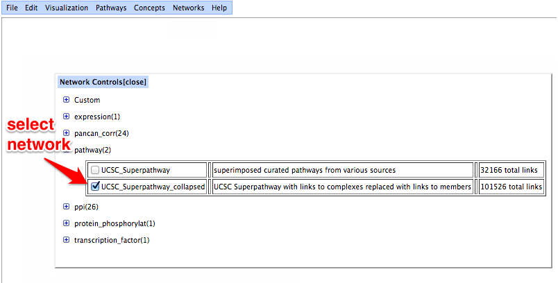
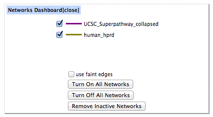
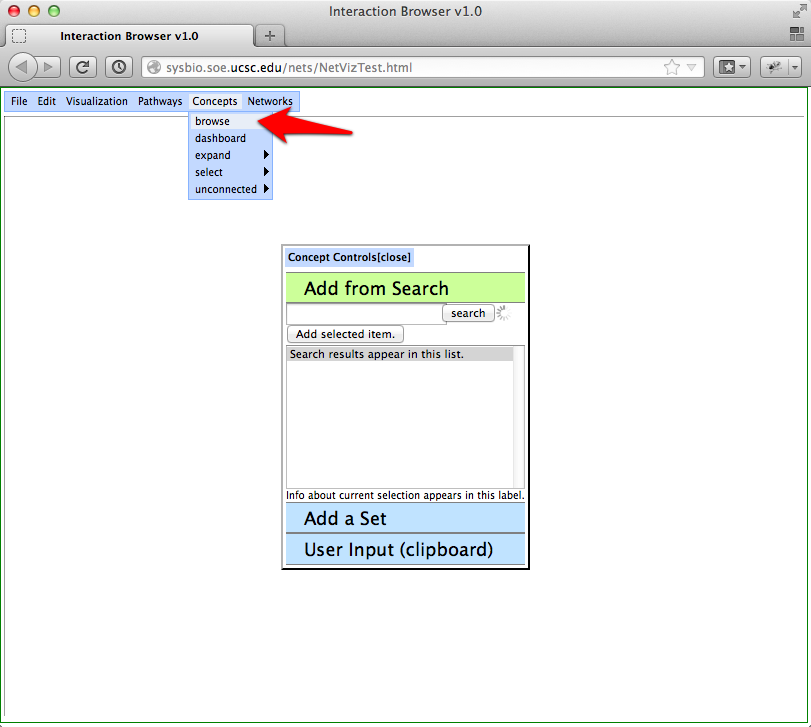
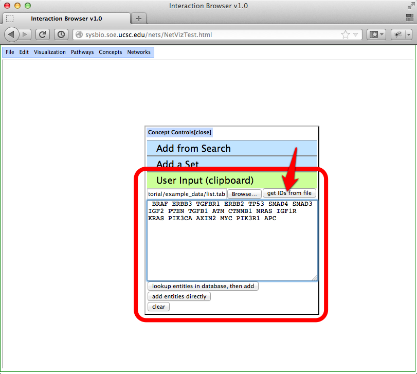
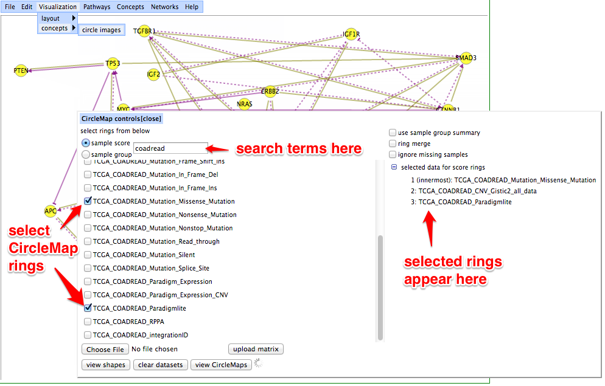
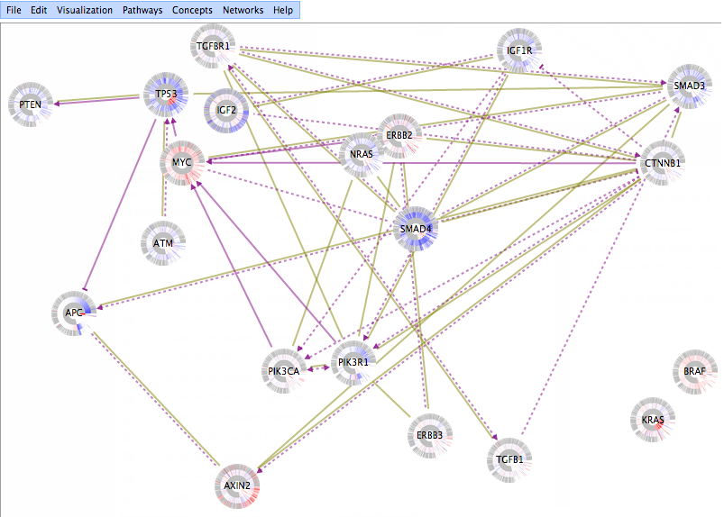
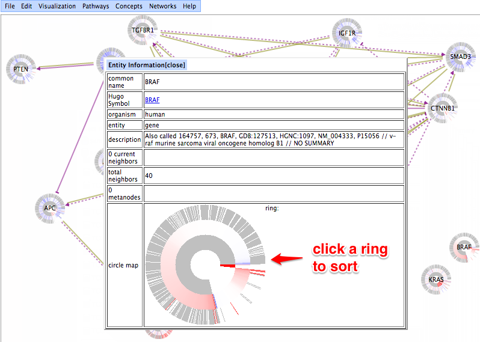
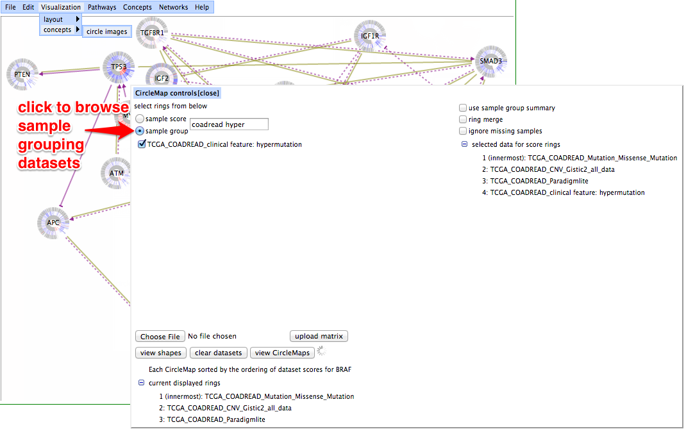
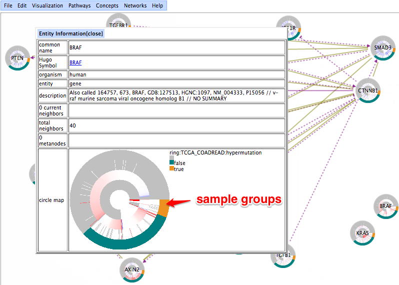

Tutorial for Displaying CircleMap Images
Here, we draw a pathway graph with CircleMap images for nodes.
-
Visit the Interaction Browser (IB) webpage by clicking here or the link near the bottom of this page. The IB will open in a new window, so you can refer back to this page easily.
-
To select a network, go to the menu bar -> Networks -> browse. When a network is selected, by clicking on the checkbox next to its name, its edges appear in the network visualization as colored lines. In the illustrated example, the `UCSC_Superpathway_collapsed' network is turned on. For this network, regulatory relationships are indicated using arrowheads for activating links and bars for deactivating links. Also, solid lines are used for post-transcriptional regulation and dotted lines are used for transcriptional regulation.

-
Select a second network, `HPRD', by browsing the ppi networks. Click the check box for `HPRD' to turn on the network. Now edges for both the `UCSC_Superpathway_collapsed' and the `HPRD' networks will be visualized.

-
Sets of genes may be added to the graph in the "browse concepts" window. To open this window, go to concepts -> browse. Click on the "user input" panel.

-
To load a gene set from a file, browse your file system using the "browse" button. The file format for gene sets is a tab-delimited file. Again, HUGO gene symbols are the preferred keyspace. An example is available at this link. Once you have found your file, click on the "get IDs from file" button. This will load your gene set into the text area. Double-check the correctness of the IDs and then click "lookup entities in database, then add" button. The Interaction Browser will attempt to map your IDs to a HUGO gene symbol, and then add them to the graph.

-
Bring up the CircleMap controls by going to Visualization -> concepts -> circle images. A list of selectable datasets will be presented. Selected datasets will be used to draw rings in the CircleMap images. The list of datasets can be reduced by entering search terms. Here we will select some data for colorectal cancer (COADREAD).

-
Each dataset that is selected is added as the outermost ring in the CircleMap. Click the "view CircleMaps" button to draw images.

-
Double-click on a CircleMap in the graph to view a larger version of the CircleMap. Clicking on a CircleMap's ring will induce a new sample ordering based on the ring's scores for the clicked gene. The new sample ordering will be applied to new CircleMap images drawn for the displayed graph nodes. (Note: This click-to-sort feature does not work as expected with the Chromium browser despite working well with Chrome.)

-
In addition to the scored, numerical dataset rings selected previously, datasets with discrete, non-numerical data are available by clicking the "sample group" button. Again, search terms may be used to reduce the list.

-
Hovering over a sample group ring will display a key to describe sample groupings.
